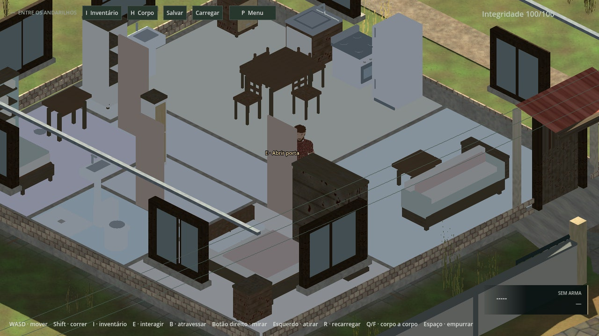
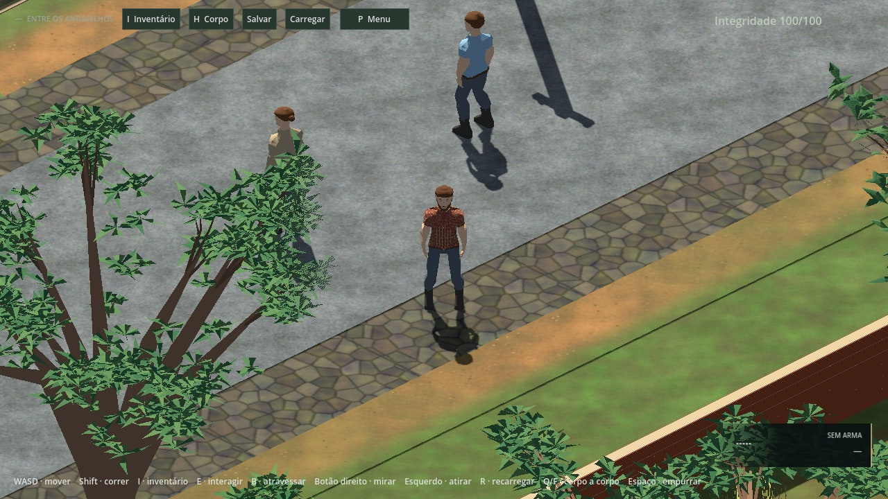
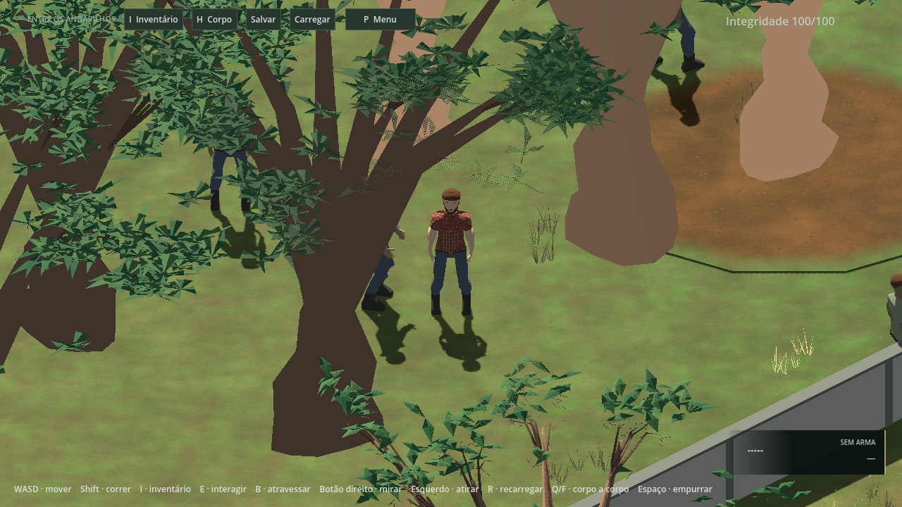
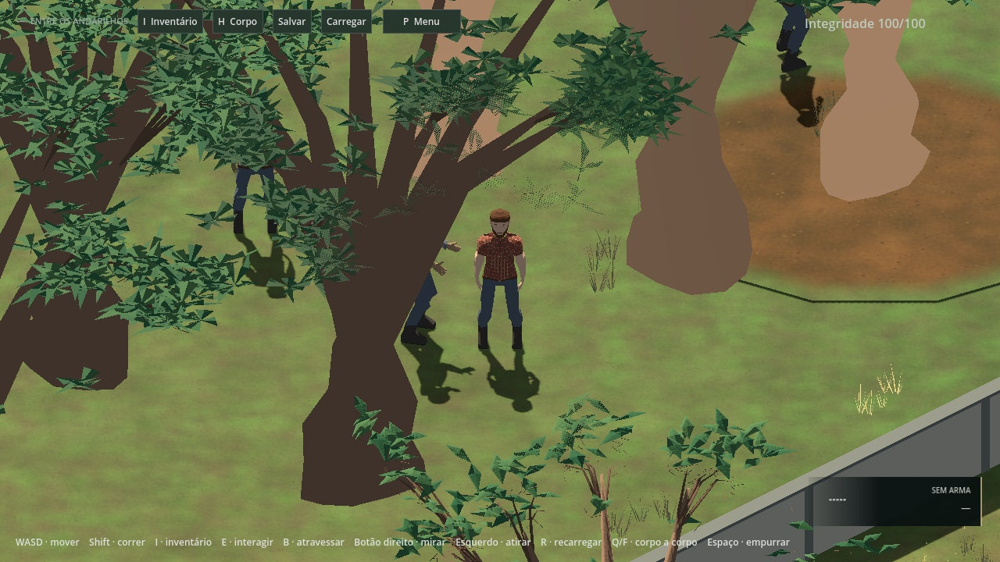

Atualização visual por distância, índice espacial incremental e menos trabalho repetido nos interiores. 480 zumbis persistentes e nove humanos preservados.
| Trecho | FPS R114 | FPS R115 | Zumbis ativos |
|---|---|---|---|
| Início H01 | 11.9 | 106.8 | 0 |
| Perto de Renata e Ricardo | 9.7 | 85.4 | 1 |
| Mata: seis zumbis ativos | 6.9 | 74.7 | 6 |
Testes locais curtos, 1280×720, Compatibility, Ryzen 5 8600G / Radeon 760M. VSync e limite de FPS desligados somente na medição. Os números não são um mínimo garantido para todos os locais ou computadores.
Humanos próximos, visíveis ou em diálogo mantêm a animação completa. Humanos distantes fora da câmera têm poses avaliadas em 5 Hz, com tempo acumulado. Os zumbis próximos continuam com IA, colisões, ataques e animações nas regras anteriores. O agendamento não remove identidades.
Passaram 229 verificações de integração R115, 2769 verificações unitárias nativas e as 111 regressões de portas, janelas, cercas e salvamento. Relatório completo, método e próximos alvos.




Capturas reais do Godot. A mata controlada usa as mesmas seis identidades e posições iniciais em ambas as versões. Cada imagem mostra um momento diferente do combate. A primeira exploração, que terminou com quantidades distintas de zumbis, não foi usada na comparação acima.
Exploração R114 · Exploração R115 · Mata R114 · Mata R115 · Regressões · Testes unitários